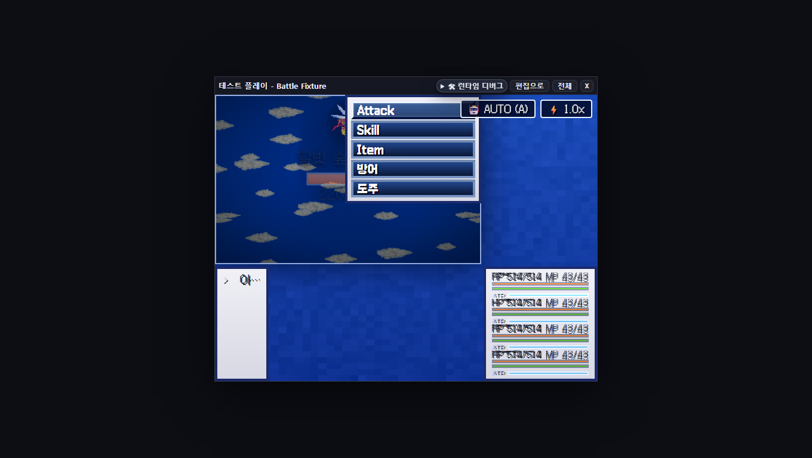
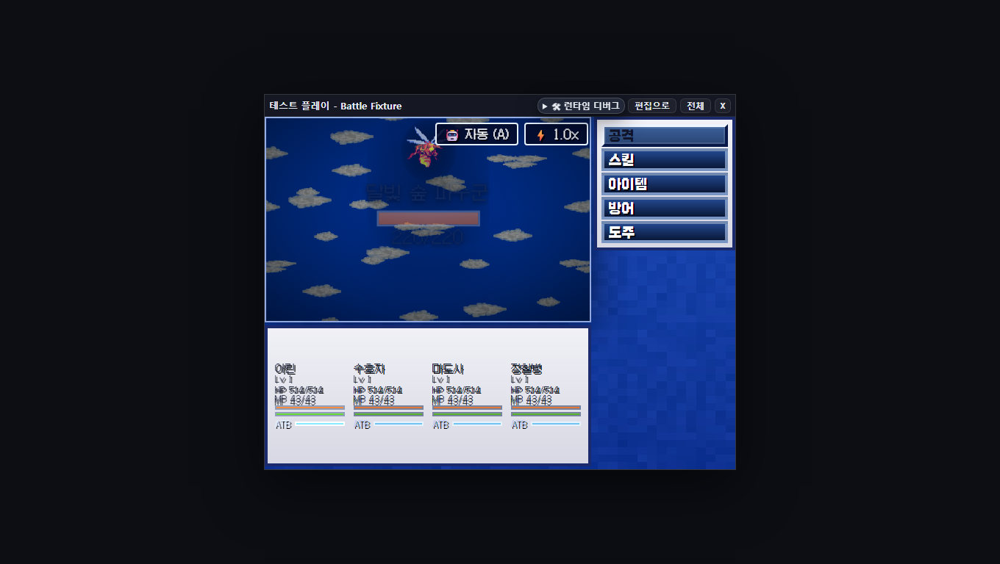
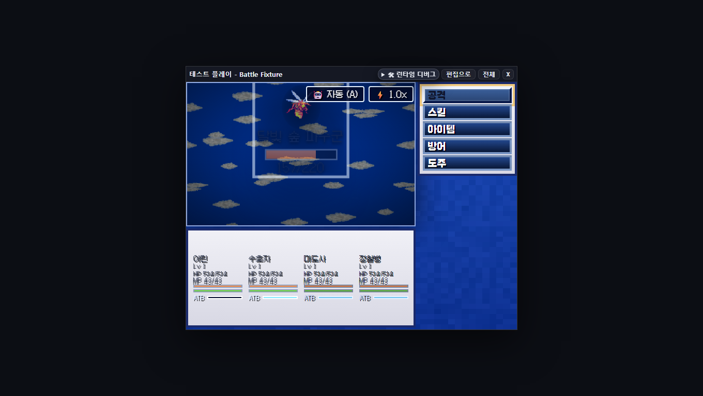
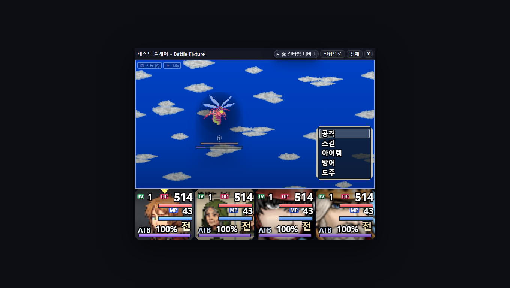
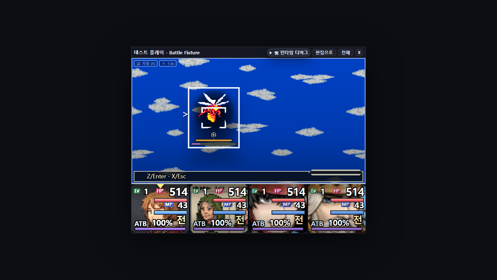
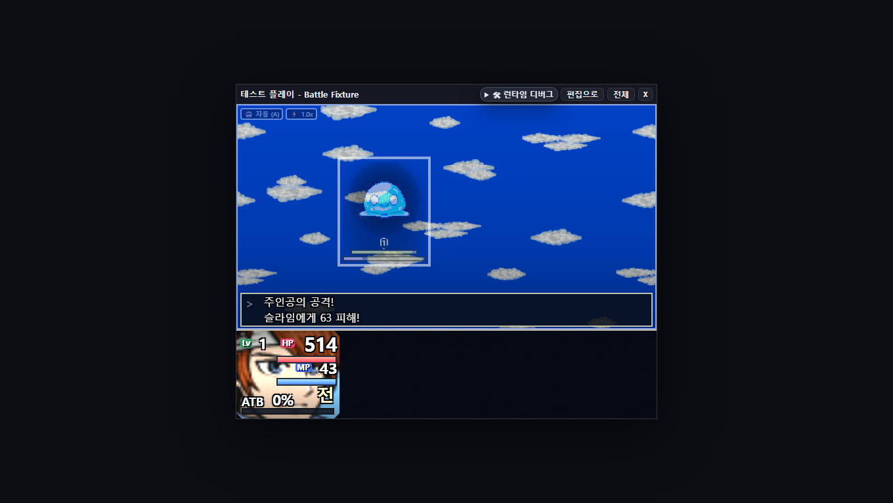
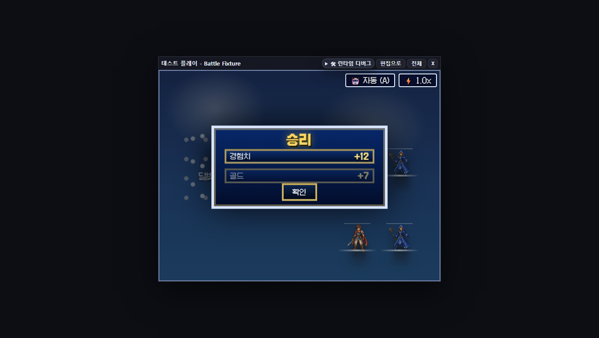

선택과 행동의 일치
화면상 선택, data-battle-command-cursor, roving tabIndex, aria-current, DOM focus, Z/Enter click이 같은 인덱스를 공유한다. 내부 keydown이 window fallback에서 두 번 처리되는 경로도 차단했다.
코드 정적 검토가 아니라, 격리 워크트리의 개발 서버에서 실제 Chromium 테스트 플레이를 실행해 명령 선택, 타깃 확정, 공격 피드백, 결과 화면과 MV 레이아웃을 확인한 기록이다.
수정 전에는 compact HUD의 후반 !important 규칙이 MV 스킨을 다시 덮어 명령 패널이 전장 안으로 역류하고, 4인 상태 텍스트가 좁은 우측 열에서 겹쳤다. 수정 후에는 448px 필드/파티와 192px 명령 레일을 분리했다.

enemyPointerBlocked=false, commandPartyOverlap=false, textOverlapPairs=0, overflowX=0, overflowY=0. 단순 “박스 밖으로 안 나감”이 아니라 elementFromPoint()와 실제 텍스트 사각형 교차를 함께 검사했다.

같은 런타임을 RM2003 계열 레이아웃에서도 플레이했다. 단일 적 전투에서 별도 적 목록을 만들지 않고 필드의 강한 링과 HP HUD를 주 신호로 사용한다.


Z/Enter · X/Esc 한 줄만 남겼다. 중복 target prompt와 enemy list는 없다.

battle-keyboard-input.spec.ts가 실제 test-play 창에서 Enter 이중 처리 결함을 먼저 재현했고, root가 본 동일 KeyboardEvent를 window fallback이 다시 처리하지 않도록 수정한 뒤 방향키·DOM focus·Enter·X·Z 전 과정을 클릭 없이 통과했다.12 files · 97 tests4 files · 26 tests1 Playwright case1 Playwright caseChromiumChromium최종 green 아님화면상 선택, data-battle-command-cursor, roving tabIndex, aria-current, DOM focus, Z/Enter click이 같은 인덱스를 공유한다. 내부 keydown이 window fallback에서 두 번 처리되는 경로도 차단했다.
상단 서술 2줄, “대상:” prompt, 별도 적 버튼 목록을 제거했다. 필드 링·이름·HP와 짧은 키 힌트만 남아 시선 이동이 줄었다.
공통 compact HUD가 MV를 덮던 cascade를 현재 .battle-actor-status DOM에 맞춰 재정의했다. 빈 command host는 포인터를 받지 않고 실제 패널과 적만 입력을 받는다.
canonical 공격·스킬·아이템은 project terms resolver를 사용한다. 한국어 reference seed에서 기본 5개 명령과 자동 (A)가 한 언어로 표시됨을 캡처로 확인했다.
| 영역 | 현재 관찰 | 후속 조치 |
|---|---|---|
| 이벤트 브라우저 E2E | 제품은 picker 선택 후 통합 event-command-edit-dialog를 사용하지만 오래된 helper 일부가 즉시 picker 종료/옛 표시명·tab을 기대한다. | timer 및 남은 command locator를 안정적인 command-picker-add-* 계약으로 전환하고 named specs를 재실행한다. |
| MV 정보 밀도 | 겹침은 0이지만 4인 파티 상태 글꼴은 여전히 작다. 640×480 고정 무대의 구조적 한계가 남는다. | 후속 P1에서 4인 모드의 HP/MP 숫자 또는 막대 중 하나를 축약하고 최소 글자 크기 게이트를 추가한다. |
| 약어 체계 | HP/MP/ATB/Lv는 JRPG 관례상 유지됐으나 별도 용어/도움말 설정은 없다. | 프로젝트 terms 확장 여부를 별도 UX 결정으로 다룬다. |
| 전체 repository gates | 저장소 전체 기준선은 기존부터 red이며 이번 보고서 시점의 최종 regression-vs-baseline 판정은 아직 실행 전이다. | typecheck:app, openwiki:verify, gates를 이벤트 E2E helper 정리 후 최종 실행한다. |
output/evidence/battle-skins/mv/output/evidence/battle-ui-simplify/output/evidence/rm2003-battle-system/output/evidence/rm2k3-battle-layout-ux/red-green/docs/battle-ui-critique-assets/20-skin-mv.pngdocs/2026-07-30-playtest-report-assets/모든 이미지와 수치는 이 worktree에서 생성·확인한 로컬 증거다. 외부 폰트, 외부 스크립트, 원격 이미지 URL을 사용하지 않았다.